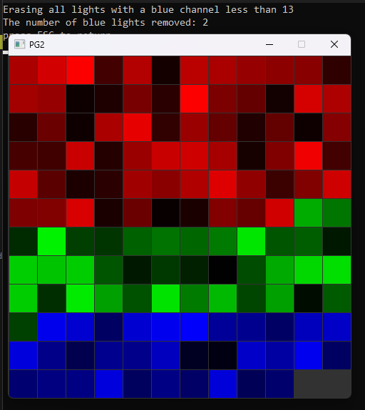

📘 `std::map` in C++
Erasing Elements
erase(iterator pos)
Removes the element at the position pointed to by the iterator.
std::map<int, std::string> myMap;
myMap[1] = "one";
myMap[2] = "two";
auto it = myMap.find(1);
if (it != myMap.end()) {
myMap.erase(it); // Removes the element with key 1
}Use Case:
- When you already have an iterator to the element you want to remove.
- Efficient: O(1) amortized time.
erase(const key_type& key)
Removes the element with the specified key.
myMap.erase(2); // Removes the element with key 2Return Value:
- Returns the number of elements removed (0 or 1 for
std::mapsince keys are unique).
💻 Practice it! Maps
🧩 Part C-1: Erase from Maps
We'll utilize the code from Day 5 for the Day 6 Practice.
- Open
Day5.cpp. - In the
Day5::PartB_2method, find the commentTODO: Part C-1 erasing from a std::map. After the comment... - Call the
groupedColorsfind method to try to find theBLUEColorChannel. - If the
BLUEchannel is not found, then print to the console that the channel could not be found. - Else, if the
BLUEchannel is found, then...- Randomly pick a number from 0 - 255.
- Print a message to the console indicating that you'll be erasing all the lights with a blue channel less than 'x'.
Example: Erasing all lights with a blue channel less than 57
- Loop over the vector for the Blue channel.
- If the blue channel is less than the randomly picked value, then erase the light from the vector.
- Keep track of how many lights were removed.
- After the loop, print the number of lights that were removed.
- If the vector for the Blue channel becomes empty, then remove the Blue channel from the
groupedColorsmap.
🎯 Result
